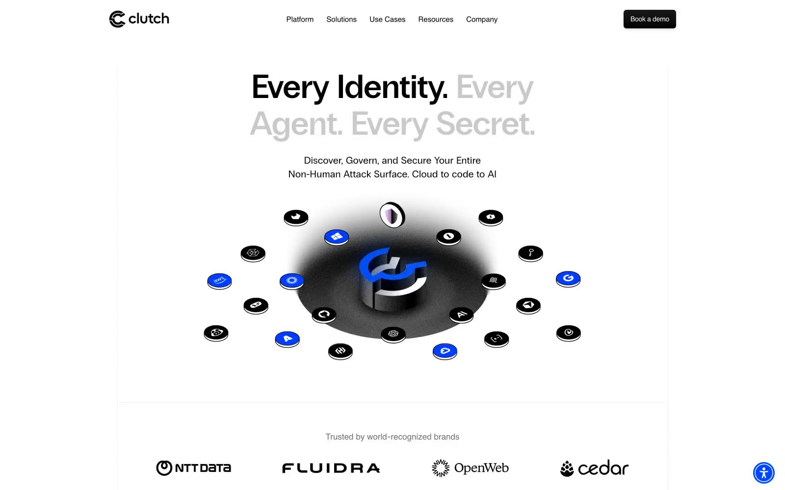

Clutch Security 的 Design.md 主题展示，围绕安全合规、金融科技、浅色界面、AI组织页面。
Explore Clutch Security's light Fintech design system: Canvas White #ffffff, Ink Black #000000 colors, Inter, PP Radio Grotesk typography, and DESIGN.md for...

#e5e7eb: #e5e7eb#000000: #000000#ffffff: #ffffff#dfdfdf: #dfdfdf#d9d9d9: #d9d9d9#c9c9c9: #c9c9c9#f9fafb: #f9fafb#6e6e6e: #6e6e6e#878787: #878787#004dff: #004dff#e6c5f7: #e6c5f7#d9e4ff: #d9e4ffdisplay: Interbody: Intermono: ui-monospacehints: Inter,ui-monospace